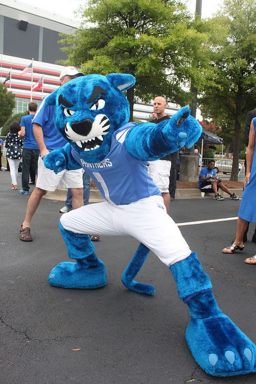

Davenport City
Pounce the Panther is the Mascot of Davenport University
- Pounce is usually represented as a stylized panther with blue fur, sharp white teeth with protruding canines, and black whiskers.
- He usually wears either the men's basketball outfit or the University football uniform
- Pounce is 6'0 with a 3 foot tail and favors the colors royal blue and white.
- He communicates via hand gestures and sign language, rather than speech.

Index Page